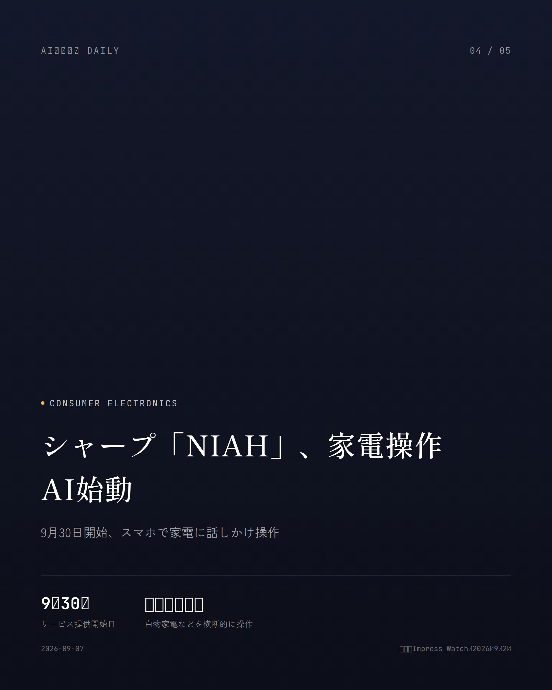

本サイトはアフィリエイトプログラムによる収益を得ている場合があります。
本サイトはGoogle AdSense等の広告配信サービスを利用しています。
約2分で読める
GPT-6 Astra始動、PC操作代行と判明
既存プランのまま利用可、数日中に全プランへ拡大
OpenAIが9月3日（米国時間）、新モデル「GPT-6 Astra」を発表した。目玉は、人の代わりにPC画面を操作してブラウザを動かし、フォーム入力や資料作成までこなしてくれる力がグンと上がったこと。同社いわく「世界で最も賢く、人の意図に一番忠実なモデル」とのこと。ただこのモデル、8月にサイバー攻撃への転用リスクが指摘されて開発・公開を一部見送っていた経緯もあり、攻撃に転用されかねない高度な処理には制限をかけたうえでの提供となる。
展開はまず一部組織向けからスタートし、数日中にChatGPTのPlus、Pro、Business、Enterpriseの各プランに広がる予定。ありがたいことに既存プランの範囲内で使えて、追加料金は0円。開発者向けにはAPIとAmazon Bedrock経由でも提供される。
性能はというと、PC操作の速度・正確さともに前モデルを上回った。ベンチマーク「OSWorld 2.0」ではスコアが上がっているのに所要時間は約47%も縮んでいて、精度と効率を同時に伸ばしてきたことがよく分かる結果になっている。
なぜ重要か
自律的にPCを操作してくれるAIが、追加料金なしで数日中にはユーザーの手元へ届く。資料作成や事務仕事の自動化が一気に現実味を帯びる一方、サイバー攻撃に転用できるほどの能力の高さゆえ、安全面の監視から目が離せない。
出典：CNET Japan、2026年9月3日
Legal
約2分で読める
Sony・WarnerがAnthropicを提訴という発表
数万曲規模の歌詞・楽曲を無断学習と主張
Sony MusicとWarner Musicの音楽出版部門が、著作権付き楽曲を「Claude」の学習に無断で使ったとして、Anthropicを米カリフォルニア州の連邦裁判所に提訴した。訴状は先週金曜に提出され、The Beatles、Taylor Swift、Michael Jacksonなど数百組のアーティストの歌詞・楽譜を海賊版から取得していたと主張している。
訴状によれば、AnthropicはLibrary GenesisやPirate Library Mirrorといった海賊版サイトから歌詞・楽譜を集めたのに加え、MusixmatchやLyricFindといったライセンス契約済みの歌詞サイトまでスクレイピングしていたという。
出版社側の主張はさらに踏み込む。Anthropicはこれらの歌詞をClaudeに学習させ、著作権者の正規楽曲と競合しかねない「新しい」AI生成歌詞を大量に作る訓練にまで使ったというのだ。損害賠償は侵害が認められた楽曲1曲あたり最大15万ドル、加えて差し止め命令も求めている。
なぜ重要か
学習データを巡る著作権訴訟が、いよいよ音楽分野にも本格上陸した。この訴訟の行方次第で、AI企業が使えるデータの範囲やサービスのコスト構造まで揺さぶられる可能性がある。
出典：Al Jazeera、2026年8月29日
Google
約2分で読める
Gmail・Docsに音声AI導入と発表
声で検索・執筆、今週から順次提供開始
米グーグルが9月3日（現地時間）、Google WorkspaceのGmail、Google Docs、Google Keepに音声でAIとリアルタイムに会話できる新機能を投入したと発表した。
「Gmail Live」は、話しかけるだけで受信トレイから必要な情報を探し出してくれる機能。「フライトの搭乗口はどこ？」でも「今週、子どもの学校で必要な準備は？」でも、受信トレイの中身から該当情報をピックアップして答えてくれる。
「Docs Live」は音声で指示しながら文書の初稿を組み立てられる機能で、Googleは「思考パートナー兼共同執筆者」と呼んでいる。「Keep Live」は、まとまっていない考えをそのまま口に出すだけでメモやリストに整理してくれる。
これらは今週から順次展開される予定。GmailとKeepの音声対話機能はGoogle AI Plus、AI Pro、AI Ultraの登録者が、Docsの音声対話機能はAI Pro、AI Ultraの登録者が利用できる。現時点では英語のみの提供で、日本語対応の時期はまだ見えていない。
なぜ重要か
毎日のメールや文書作成が「話しかけるだけ」で片づく時代が近づいてきた。子どもの学校の予定確認など、家庭の細かい情報整理が楽になる部分こそ生活実感に直結する。
出典：ケータイWatch、2026年9月3日

Consumer Electronics
約1分で読める
シャープ「NIAH」、家電操作AI始動
9月30日開始、スマホで家電に話しかけ操作
シャープが白物家電などに対応するAIエージェント「NIAH（ニア）」を9月30日から提供開始する。猫っぽいキャラクターがスマホ越しにユーザーの指示を受け取り、家電の操作から使い方の提案、おすすめ情報の案内までこなしてくれる。
製品によってはすでに別のAIエージェントを積んでいるものもあるが、そういう場合もNIAHが窓口になって連携してくれる仕組みだ。複数の家電をまたいで一つの窓口から操作できる点が肝になっている。
なぜ重要か
家電ごとに操作方法やアプリを覚え直す手間がなくなり、スマホ一台で家事の負担が軽くなるかもしれない。暮らしにそのまま効いてくる、分かりやすいAI活用例だ。
出典：Impress Watch、2026年9月2日
Google
約1分で読める
Google、画像編集AI「Pics」投入
資料の画像をその場でAI編集、9月1日開始
米Googleが9月1日（現地時間）、AI採用の画像生成・編集ツール「Google Pics」を発表した。Google Workspaceのツールとして、今後数週間かけて「Google AI Pro」「Google AI Ultra」の加入者と、大半のWorkspaceビジネス顧客に順次届けていく。
同社の画像生成AIモデル「Nano Banana」を土台にしていて、生成した画像から特定の物体だけを切り出して編集したり、指定した部分にコメントを付けて修正を指示したりできる。画像内の文字をデザインやフォントはそのままに変更・翻訳する機能も入っている。
Google DocsとSlidesでは9月1日からPicsの機能がひと足先に使えるようになった。文書やプレゼン資料の画像を選んで、その場でAI編集ができる。Google Driveとの連携も今後数週間で広がっていく予定だ。
なぜ重要か
SNS投稿用の画像やチラシ作りといった日常的な編集作業が、アプリを閉じずその場で完結する時代になる。デザインの専門知識がなくても資料の見栄えを底上げしやすくなる。
出典：ITmedia NEWS、2026年9月1日
Developer Tools
Developer Tools
約1分で読める
コーディングAI、Claudeが首位逆転
開発者の9割が週1回以上AIツールを利用
AIコーディングエージェントの利用状況を追った最新調査で、開発者の90%が週1回以上こうしたツールを触っていることが分かった。
その中でAnthropicの「Claude Code」がシェア39%を握り、これまで首位だった「GitHub Copilot」を逆転した。1月時点でのシェアは18%だったというから、伸び方がかなり急だ。
AIコーディングツールはもう一部の先進的な開発者だけのものじゃなく、現場の標準装備になりつつある。そんな流れを裏づける結果だ。
なぜ重要か
職場でどのAIコーディングツールを標準にするかは、採用や研修方針にも直結する話。エンジニアとして働く人にも、これから学ぶ人にも、身につけるべきツールの目安になる。
出典：Ledge.ai、2026年9月上旬
Google
Google
約1分で読める
Google、サイバー防御特化AIを新提供
「Fairwind」通じ信頼できる防御担当者へ限定公開
Googleが新型AIモデル「Gemini 3.8 Flash」と、サイバーセキュリティ対策に特化した「Gemini 3.8 Flash Cyber」を発表した。
Flash Cyberは「Fairwind」という新プログラムを通じて、信頼できるセキュリティ防御担当者向けに提供される。攻撃側による悪用リスクが指摘されるなか、守る側の専門家がAIを使いやすくする狙いがありそうだ。
なぜ重要か
AIによるサイバー攻撃の高度化が懸念される一方、守る側もAIを本気で使い始める流れが強まっている。企業の情報システム担当者にとっては無視できない動きだ。
出典：AI Weekly、2026年9月2日
先頭に戻る